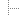
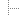

Preparing for MacOS X
If you would like to use your add-on with Archicad 7.0, you should prepare it to run on MacOS X. This process is called 'Carbonization'. Carbon is a subset of MacOS interface calls (approximately 80% of the original MacOS Toolbox calls are there), which are also available on MacOS X in native mode. If you have any Mac-specific code in your add-on (e.g. a file dialog), you have to modify your code to use only function calls available in Carbon.
The development environment to use is CodeWarrior Pro 6, which contains the necessary headers and libraries for Carbon. You can also use a slightly newer Universal Headers (version 3.5) and CarbonLib (1.2.5 at the time of writing), which are available to ADC members.
More information on Carbonization can be found at Apple's development web site.


 
